"Hij werkt met Ikea hun keuken kasten maar knutselt er zo danig mee dat je ikea kasten krijgt die officieel niet bestaan."
kenny ceuleersBerging
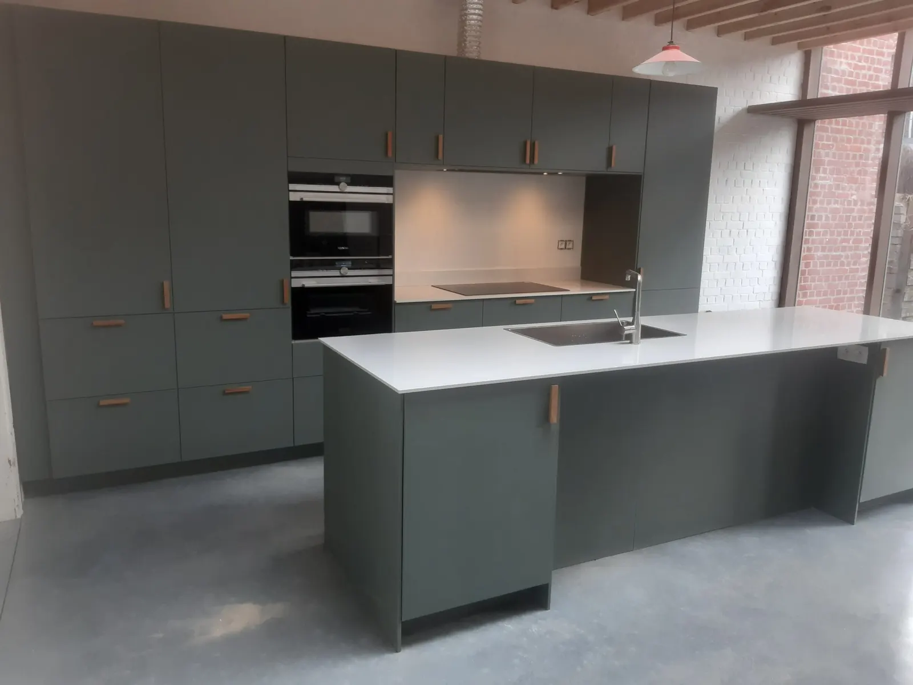
Keukens · dressings · wasplaatsen
Stefan vertrekt van stevige IKEA-kasten en bouwt ze om tot ze echt in jouw huis passen. Andere fronten, een nis met licht, een vaatwasser op hoogte: jij vraagt het, hij zoekt hoe het kan.
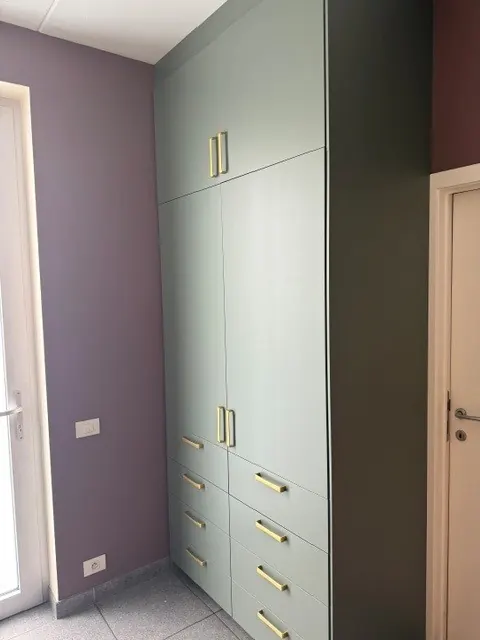
Saliegroen met messing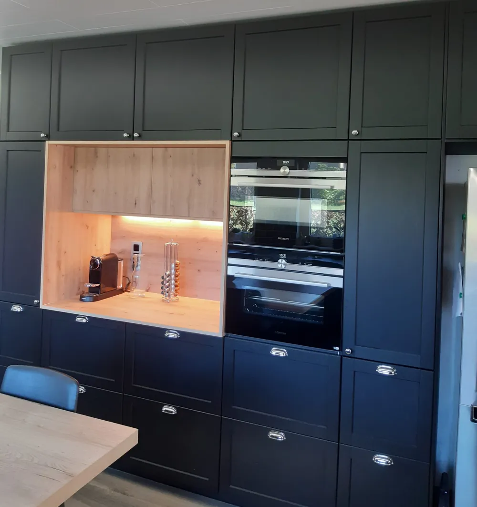
01 02 03 0401 · Hoe het werkt
IKEA-kasten zijn stevig, betaalbaar en makkelijk te ruilen als je onderweg van gedacht verandert. Daarop bouwt Stefan verder, samen met vaste partners voor fronten, grepen en werkbladen.
Een stenen werkblad erop? Dat regelen we via onze partners en plaatsen we mee.
02 · Realisaties
Een greep uit wat Stefan de voorbije jaren plaatste. Elke ruimte in huis komt in aanmerking, ook de lastige.
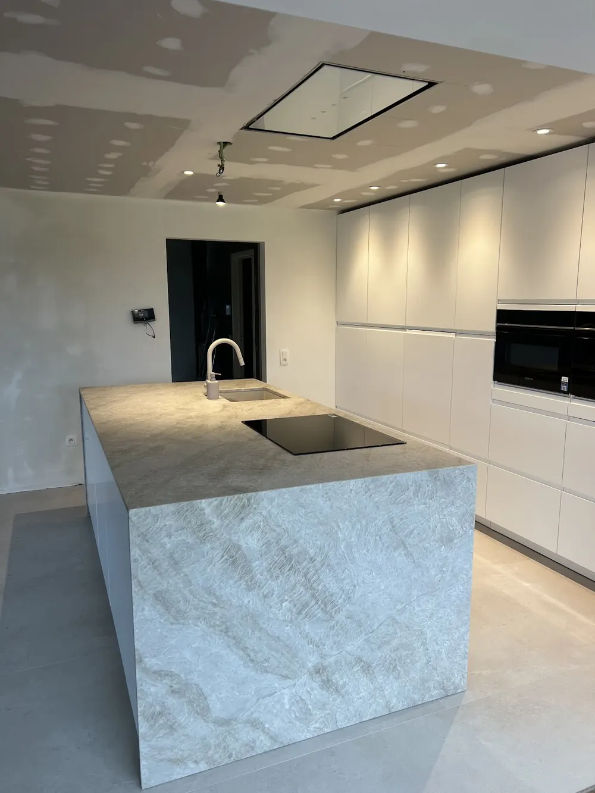
Keuken stenen eiland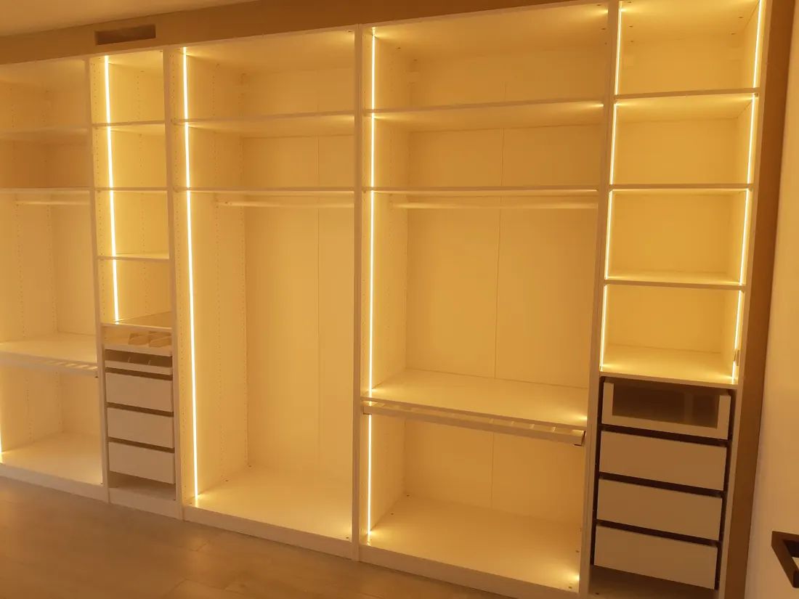
Dressing met led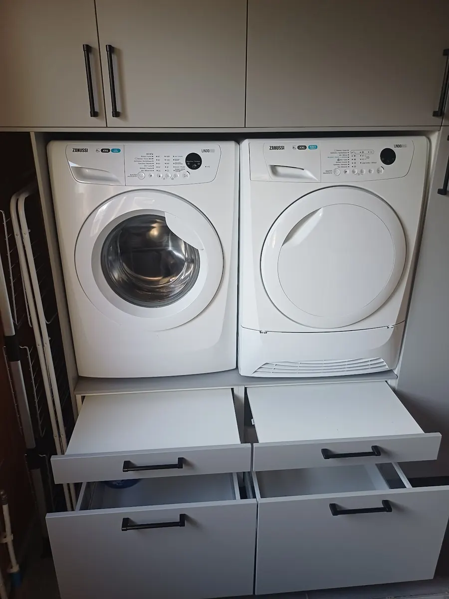
Wasplaats Living tv-wand
Living tv-wand Keuken
Keuken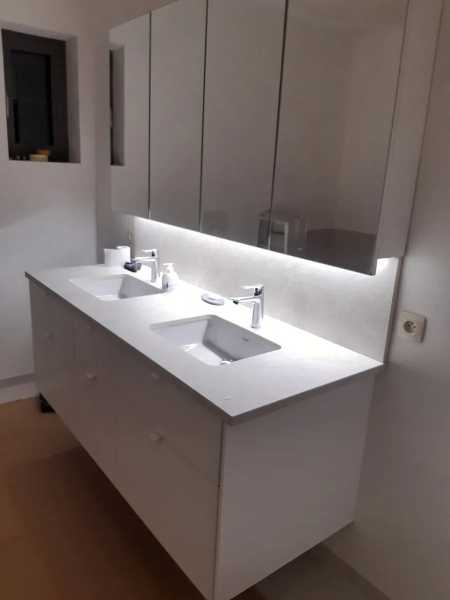
Badkamer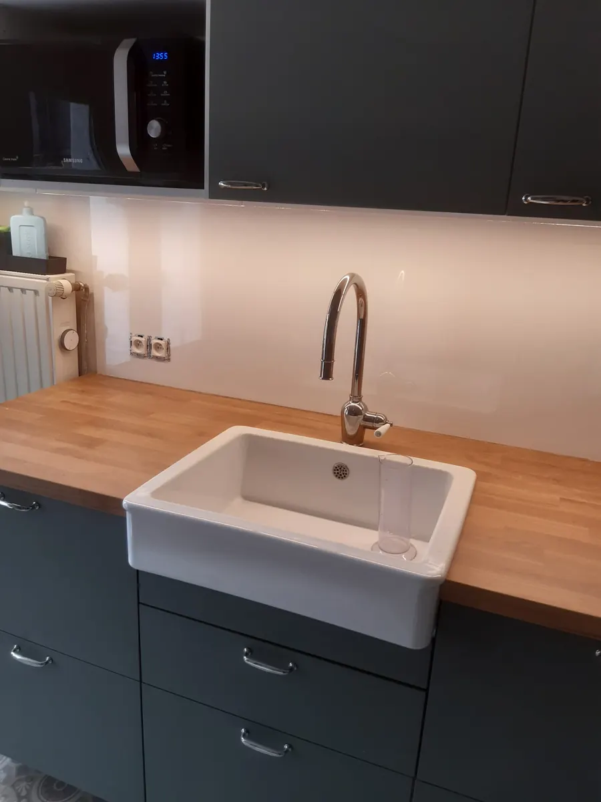
Keuken eik & groen03 · De slimme stukjes
Een vaatwasser op hoogte, een kast die onder een schuine wand past. Wat in de catalogus niet bestaat, bouwt Stefan gewoon.
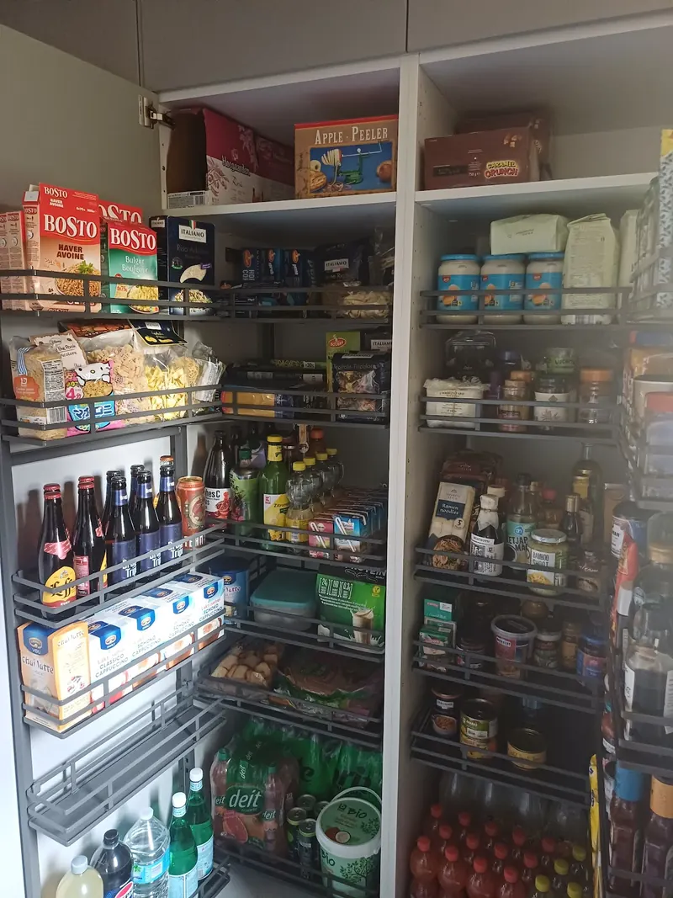
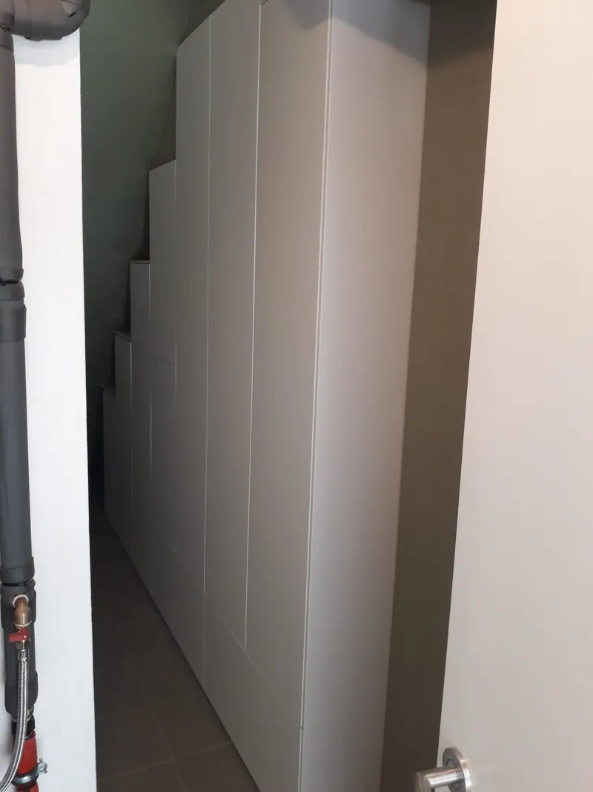
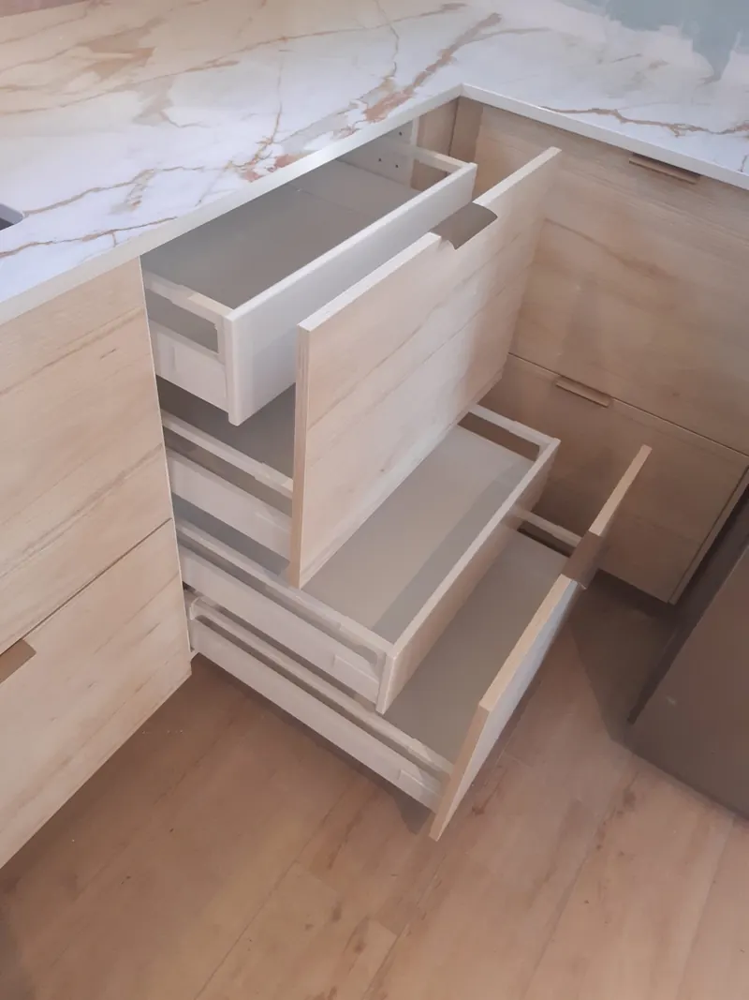
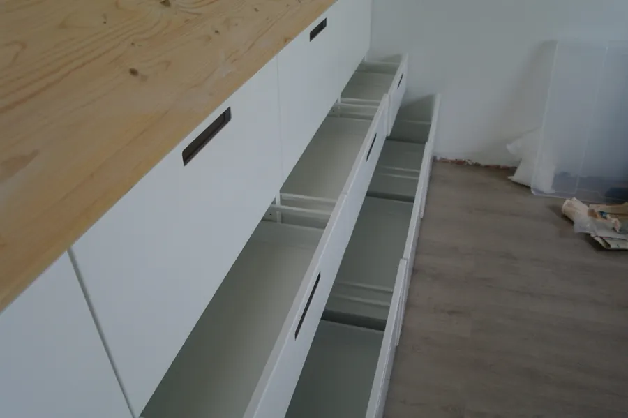

04 · Wat klanten zeggen
Sommigen geloofden zelfs niet dat het IKEA was.
"Hij werkt met Ikea hun keuken kasten maar knutselt er zo danig mee dat je ikea kasten krijgt die officieel niet bestaan."
"Wij wilden absoluut een vaatwasser op hoogte wat onmogelijk zou zijn bij een IKEA keuken. Maar voor Stefan is dat geen enkel probleem hij maakt zijn naam waar!"
"Je kan op hem rekenen, hij is heel stipt, zoekt naar creatieve oplossingen, overlegt op een aangename manier en doet zijn job uitstekend én met een glimlach en originele humor ;)"
"Vanaf het eerste contact nam Stefan veel stress weg door mee te denken en met goede ideeën te komen. De afbraak van de oude keuken verliep snel, efficiënt en alles werd netjes opgeruimd."
05 · Werkwijze
Je weet op elk moment wat er gebeurt en wanneer. Geen verrassingen, wel een keuken of kast die er op de afgesproken dag staat.
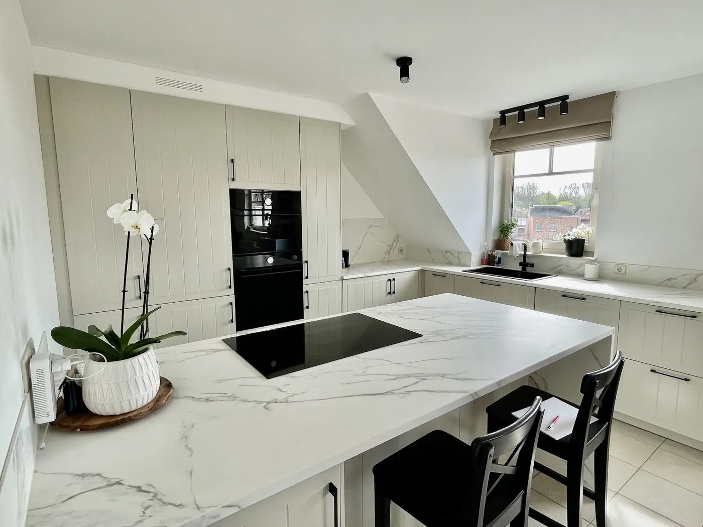
Keuken onder het dakKennismaking
Je vertelt wat je wil en we brengen alles in kaart. Met je plannen en ideeën kom je bij ons thuis, waar het huis is ingericht als toonzaal. Of we komen naar jou voor een opmeting.
Start samenwerking
We vertrekken van de IKEA-kasten en bekijken hoe ze in jouw woning passen. De datum wordt vastgelegd, de materialen besteld en je krijgt de voorschotfactuur voor de IKEA-kasten. Een grote levering komt vlak voor de plaatsing.
D-day
We komen niet met de fiets, dus hou een parkeerplaats vrij en zorg voor genoeg werkruimte. Blijf liefst thuis die dag: zien we iets dat beter kan, dan bespreken en regelen we het meteen.
Genieten
We nemen afscheid en jij geniet van de nieuwste creatie van de kastentovenaar. Hangt er nog een lamp of schilderij te wachten? Dat doen we er gerust bij.
06 · Bij ons thuis
Ons huis is ingericht als toonzaal. Je ziet hoe een front er in het echt uitziet, voelt hoe een lade sluit en gaat naar huis met ideeën.
Jij kiest wat je zelf doet en wat je laat doen. Mee uitpakken en monteren mag gerust: het gaat sneller en je houdt meer budget over.
Even bellen of mailen, en we spreken een moment af.
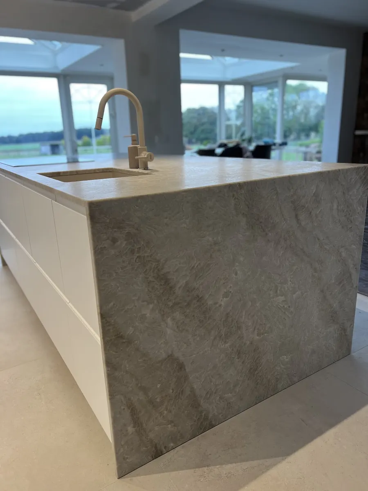
Voor bijna elk probleem heb ik wel een spreuk.
07 · Contact
Stuur een paar foto's van je ruimte en de maten die je al hebt. Dan kijken we samen wat er kan.
Ik maakte deze demo voor jullie om te tonen wat er kan. Na een kort gesprek maak ik er iets veel persoonlijkers van, helemaal naar jullie wens.
Vrijblijvend. Ik kom langs of we bellen.
Op maat, op jullie eigen domein.
Geen voorschot. Jullie betalen pas als alles klaar is.
Hosting, domeinnaam en kleine wijzigingen, zoals nieuwe openingsuren.
Omdat een voorbeeld meer zegt dan een mail. Zo zien jullie meteen wat er kan, en het kost jullie niets.
Nee. Het gesprek is vrijblijvend. Vinden jullie het niks, dan is het daarmee gedaan.
Na ons gesprek staat jullie site binnen 10 tot 14 dagen online.
Zeker. Jullie domeinnaam kan gewoon blijven, de nieuwe site komt in de plaats van de oude.
Nee, dat doe ik op basis van ons gesprek. Eigen foto's zijn mooi meegenomen, maar niet nodig om te starten.